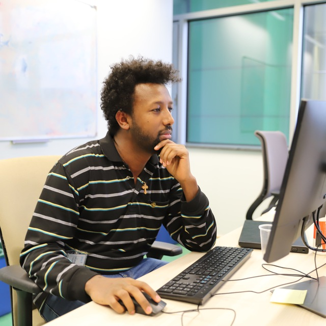

Tedros Salih Abdu
Tedros Salih Abdu
Researcher in 5G/6G Terrestrial & Non-Terrestrial Networks
I am a researcher at the Interdisciplinary Centre for Security, Reliability and Trust (SnT), University of Luxembourg, working on the design and optimization of next-generation wireless communication systems.
My research focuses on terrestrial and non-terrestrial networks (TN/NTN), particularly mobility and handover, radio-resource management, satellite system planning and constellation optimization, and the application of mathematical optimization and machine learning to communication networks.
My background combines academic research, industrial R&D, and research-project leadership.

Research at a Glance
My research addresses a central challenge in future wireless networks:
How can increasingly dynamic terrestrial and non-terrestrial communication systems make better decisions about connectivity, resources, and network architecture?
I approach this challenge across four interconnected dimensions:
🔗 Connect
Enabling seamless mobility and handover across terrestrial cells, satellite beams, and moving satellite networks.
⚙️ Optimize
Developing methods to allocate power, bandwidth, beams, and network resources efficiently under changing traffic and system conditions.
🛰️ Design
Connecting service requirements with satellite-system planning and constellation design for future 6G and Direct-to-Device connectivity.
🧠 Learn
Investigating where machine learning can complement mathematical optimization for mobility, resource management, and network decision making.
Research Areas
🛰️ TN–NTN Mobility & Handover
How can users move seamlessly between terrestrial networks, satellite beams, and moving satellites?
I study mobility and handover in integrated terrestrial and non-terrestrial networks, including demand-aware satellite handover, MNO–SNO cooperation, context-aware mobility, and AI/ML-assisted handover decisions.
Explore TN–NTN mobility research →
📡 Radio Resource Management
How should limited communication resources adapt to changing traffic, interference, and network conditions?
My work investigates the efficient management of power, bandwidth, beams, scheduling, interference, and payload resources across GEO, MEO, and NGSO satellite communication systems.
I use mathematical optimization together with heuristic and learning-assisted approaches to develop resource-management strategies that adapt to heterogeneous traffic demand and system constraints.
🌐 Satellite System Planning & Constellation Optimization
What satellite capabilities—and what constellation architecture—are needed to deliver a target communication service?
I investigate the connection between service requirements, satellite resource planning, system dimensioning, orbital characteristics, coverage, and constellation optimization.
This research moves beyond operating an existing satellite system toward determining what resources and network architecture should be deployed in the first place.
Explore satellite planning research →
🧠 AI/ML for Communication Networks
Where can learning provide a measurable advantage over conventional optimization and rule-based methods?
I investigate machine-learning approaches for mobility management, handover, resource optimization, network planning, and intelligent decision making.
Rather than treating AI as an objective by itself, I am interested in understanding where learning can complement communication-system models and mathematical optimization to improve network performance and adaptability.
Current Focus
Intelligent Mobility for Integrated TN–NTN
One of my current research directions is the development of intelligent mobility and handover mechanisms for integrated terrestrial and non-terrestrial networks.
Future users may move—or maintain connectivity—across terrestrial cells, satellite beams, and different satellites. This makes mobility management a decision problem involving not only radio conditions, but also satellite visibility, network availability, user requirements, resources, and expected service continuity.
I currently serve as VPI of SHINE, where my work focuses on intelligent mobility and handover for integrated terrestrial and non-terrestrial networks.
My activities include research and technical leadership, system and scenario modeling, development of technical specifications, technical baseline definition, coordination of technical activities, reporting, and dissemination.
Read my TN–NTN mobility perspective →
From Research Results to New Questions
Research papers usually present a problem after it has been formulated, investigated, and evaluated. Many new research directions, however, begin earlier—with an observation, a connection between problems, or an unanswered question.
I use the Ideas & Research Notes section to document selected research perspectives and emerging directions related to my work.
Current themes include:
- intelligent mobility and handover across integrated TN–NTN systems,
- satellite resource planning and system dimensioning,
- constellation optimization for future 6G connectivity,
- joint mobility and resource management,
- and the role of AI/ML in communication-system decision making.
Explore Ideas & Research Notes →
Research Journey
My research has evolved from radio-resource management for flexible satellite systems toward broader questions involving network mobility, satellite-system planning, constellation design, and intelligent decision making.
Along this path, I have worked across academic research and industrial R&D, including algorithm development and system-level simulation for 5G systems at Nokia and collaborative satellite-communication research at the University of Luxembourg.
This combination of perspectives continues to shape how I approach research: from understanding the communication-system model, to formulating the optimization or learning problem, to evaluating whether the resulting method provides a meaningful system-level benefit.
Learn more about my background →
Explore
Research Publications Ideas & Notes About Google Scholar Email